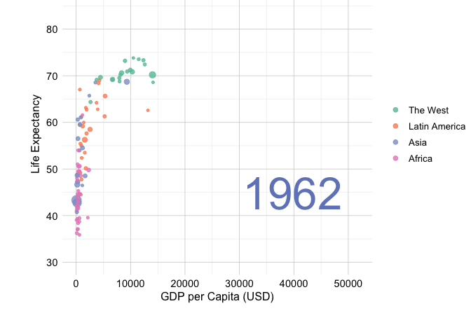
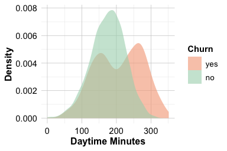
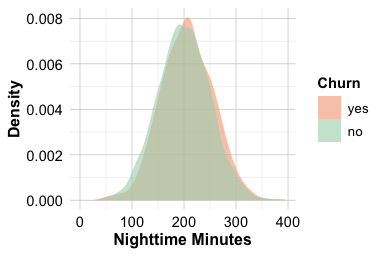
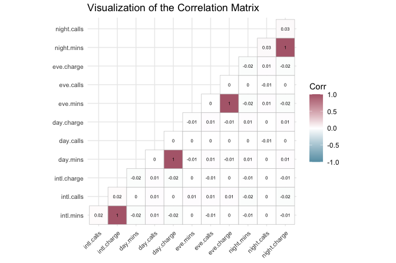
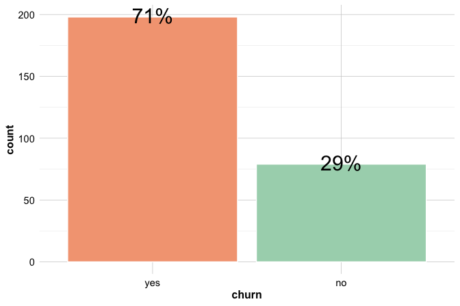

4 Exploratory Data Analysis
The greatest value of a picture is when it forces us to notice what we never expected.
Exploratory Data Analysis (EDA) is the essential first step before building models or conducting statistical inference. It involves examining data carefully, thoroughly, and creatively to uncover insights. By revealing unexpected patterns, identifying anomalies, and highlighting potential relationships, EDA shapes the direction of all subsequent analysis.
EDA plays a pivotal role in the Data Science Workflow (see Figure 2.3), serving as the bridge between Data Preparation (Chapter 3) and Data Setup to Model (Chapter 6). This stage deepens our understanding of the data’s structure, quality, and potential, ensuring that downstream decisions rest on a solid empirical foundation.
Unlike formal hypothesis testing, EDA is not rigid or rule-driven. It is an iterative, open-ended process that encourages curiosity and experimentation. Different datasets raise different questions, and some exploratory paths will reveal meaningful trends while others uncover data issues or lead to dead ends. Through this process, analysts develop intuition, refine their focus, and identify the most informative features for modelling.
The purpose of EDA is not to confirm theories but to generate insight. Summary statistics, exploratory visualisations, and correlation measures provide an initial map of the data landscape. These findings should be interpreted cautiously, as early patterns may not represent causal relationships. In Chapter 5, we introduce formal tools for statistical inference that build on this exploratory foundation.
EDA also highlights the importance of practical relevance. In large datasets, weak patterns can easily reach statistical significance yet offer little real-world value. For example, a slight difference in customer engagement may be statistically detectable but too small to influence business decisions. Integrating domain expertise is therefore essential when interpreting exploratory findings.
Finally, EDA is central to assessing and improving data quality. Outliers, missing values, inconsistent formats, and redundant variables often emerge during exploration. Addressing these issues early ensures that later models are both reliable and interpretable. The choice of EDA techniques depends on the nature of the data and the analytical questions at hand. Histograms and box plots reveal distributions, while scatter plots and correlation matrices expose relationships. The next sections introduce these tools in context and explain how to apply them effectively.
What This Chapter Covers
This chapter introduces exploratory data analysis as a critical stage in the data science workflow. You will learn how to use summary statistics and visual techniques to examine variable distributions, detect anomalies, and uncover relationships that inform downstream modelling. The chapter also shows how correlation analysis helps identify redundancy and how multivariate exploration can reveal patterns that enhance predictive insight.
The chapter begins with EDA as Data Storytelling, which emphasises the importance of communicating exploratory findings with clarity and context. This is followed by Key Objectives and Guiding Questions for EDA, which outline the main aims of exploration and the questions that support a structured analytical process.
Building on these ideas, the chapter presents a detailed exploration of the churnCredit dataset from the liver package. This example illustrates how real-world patterns emerge from data, how visualisations illuminate customer behaviour, and how exploratory insights prepare the ground for classification modelling using k-nearest neighbours in Chapter 7.
The chapter concludes with a comprehensive set of exercises and hands-on projects using two additional real-world datasets (bank and churn, also from the liver package). These activities provide further practice with EDA techniques and lay the foundation for the neural network case study in Chapter 12.
4.1 EDA as Data Storytelling
Exploratory data analysis is not only a technical process for uncovering patterns; it is also a way of communicating insights clearly and persuasively. While EDA reveals structure, anomalies, and relationships, these findings gain value only when they are presented with context and purpose. Data storytelling plays a central role in this process by transforming raw exploration into insight.
Effective storytelling in data science weaves together analytical evidence, contextual knowledge, and visual clarity. Rather than presenting statistics or plots in isolation, strong analysis connects each observation to a broader narrative. Whether the audience includes analysts, business stakeholders, or policymakers, the goal is to convey findings in a way that is meaningful and relevant.
Consider a typical observation: customers with high daytime usage appear more likely to churn. Stating this pattern is informative, but it does not yet offer understanding. A narrative that links the pattern to its implications brings the analysis to life:
“Customers with extensive daytime usage show a higher tendency to churn, possibly due to pricing concerns or dissatisfaction with service quality. Targeted retention strategies, such as customised discounts or more flexible pricing plans, may help address this risk.”
This shift from description to interpretation is at the heart of data storytelling. It invites reflection and supports informed decision-making.
Visualisation is central to this process. While summary statistics offer a structural overview, visual displays make patterns tangible. Scatter plots and correlation matrices highlight relationships among numerical features; histograms and box plots clarify distributions and skewness; bar charts and mosaic visualisations reveal differences across categories. Choosing appropriate visual tools not only strengthens analysis but also improves communication.
Storytelling through data is widely used across domains, from business and journalism to public policy and scientific research. A well-known example is Hans Rosling’s TED Talk New insights on poverty, where decades of demographic and economic data are presented in an engaging, intuitive format. Figure Figure 4.1, adapted from his presentation, illustrates how GDP per capita and life expectancy have changed across world regions from 1950 to 2019. The figure is generated from the gapminder dataset available in the liver package and visualised using ggplot2. Although drawn from global development, the same principles apply when exploring customer behaviour, financial trends, or service outcomes.
As you conduct EDA, it is useful to ask not only what the data shows, but also why those patterns matter. What story is emerging? How might that story inform a decision, challenge an assumption, or motivate further analysis? Thinking in narrative terms ensures that exploratory work is not merely descriptive but purposeful, rooted in the real-world questions that prompted the analysis.
The next section builds on these ideas by outlining the key objectives and guiding questions that shape effective exploratory analysis. Together, they provide a structured yet flexible foundation for the detailed EDA of customer churn that follows.
4.2 Objectives and Guiding Questions for EDA
EDA marks the first substantive interaction between analyst and dataset, the moment when raw information begins to reveal its structure, surprises, and potential narratives. Rather than moving directly into modelling, experienced analysts pause to ask what the data contains, which patterns stand out, and which issues require attention.
A useful starting point is to clarify what exploratory analysis is designed to accomplish. At its core, EDA seeks to understand the structure of the data, including variable types, value ranges, missing entries, and possible anomalies. It examines how individual variables are distributed, identifying central tendencies, variation, and skewness. It investigates how variables relate to one another, revealing associations, dependencies, or interactions that may later contribute to predictive models. It also detects patterns and outliers that might indicate errors, unusual subgroups, or emerging signals worth investigating further.
These objectives form the foundation for effective modelling. They help analysts refine which features deserve emphasis, anticipate potential challenges, and identify early insights that can guide the direction of later stages in the workflow.
Exploration becomes more productive when guided by focused questions. These questions can be grouped broadly into those concerning individual variables and those concerning relationships among variables. When examining variables one at a time, the guiding questions ask what each variable reveals on its own, how it is distributed, whether missing values follow a particular pattern, and whether any irregularities stand out. Histograms, box plots, and summary statistics are familiar tools for answering such questions.
When shifting to relationships among variables, the focus moves to how predictors relate to the target, whether any variables are strongly correlated, whether redundancies or interactions might influence modelling, and how categorical and numerical variables combine to reveal structure. Scatter plots, grouped visualisations, and correlation matrices help reveal these patterns and support thoughtful feature selection.
A recurring challenge, especially for students, is choosing which plots or techniques best suit different types of data. Table 4.1 summarises commonly used exploratory objectives alongside appropriate analytical tools. It serves as a practical reference when deciding how to approach unfamiliar datasets or new analytical questions.
| Exploratory.Objective | Applicable.Data.Type | Recommended.Techniques |
|---|---|---|
| Examine a variable’s distribution | Numerical | Histogram, box plot, density plot, summary statistics |
| Summarize a categorical variable | Categorical | Bar chart, frequency table |
| Identify outliers | Numerical | Box plot, histogram |
| Detect missing data patterns | Any | Summary statistics, missingness maps |
| Explore the relationship between two numerical variables | Numerical & Numerical | Scatter plot, correlation coefficient |
| Compare a numerical variable across groups | Numerical & Categorical | Box plot, grouped bar chart, violin plot |
| Analyze interactions between two categorical variables | Categorical & Categorical | Stacked bar chart, mosaic plot, contingency table |
| Assess correlation among multiple numerical variables | Multiple Numerical | Correlation matrix, scatterplot matrix |
By aligning objectives with guiding questions and appropriate methods, EDA becomes more than a routine diagnostic stage. It becomes a strategic component of the workflow that enhances data quality, informs feature construction, and lays the groundwork for effective modelling.
The next section applies these principles through a detailed EDA of customer churn, showing how statistical summaries, visual tools, and domain understanding can uncover patterns that support predictive analysis.
4.3 EDA in Practice: The churnCredit Dataset
Exploratory data analysis (EDA) is most meaningful when applied to real data and practical questions. In this section, we illustrate the process using the churnCredit dataset, which contains demographic, behavioral, and financial information about customers, along with a binary variable indicating whether each customer has churned—that is, discontinued the service.
This walkthrough follows the structure of the Data Science Workflow introduced in Chapter 2. We begin by revisiting the first two steps, Problem Understanding and Data Preparation, to establish the business context and examine the dataset’s structure. The main emphasis is on Step 3: Exploratory Data Analysis, where visualizations, summary statistics, and guiding questions are used to uncover meaningful patterns related to customer churn.
The insights developed in this section provide a foundation for the subsequent stages of analysis: preparing the data for modeling in Chapter 6, constructing predictive models using k-nearest neighbors in Chapter 7, and assessing model performance in Chapter 8. Working through these stages in sequence demonstrates how a thorough exploratory analysis enhances understanding and strengthens the decisions made through modeling.
Problem Understanding for the churnCredit Dataset
A manager at a bank has become increasingly concerned about the growing number of customers closing their credit card accounts. Understanding why customers leave—and being able to anticipate who is at risk of doing so—has become a strategic priority. Predicting churn would allow the bank to intervene proactively, offering improved services or incentives to retain valuable customers.
Customer churn, the loss of existing clients, is a persistent challenge in subscription-based industries such as banking, telecommunications, and streaming services. Because retaining an existing customer is typically more cost-effective than acquiring a new one, identifying the factors that drive churn is a central task for both analysts and decision-makers.
From a business perspective, this problem gives rise to three key questions:
Why are customers choosing to leave?
What behavioral or demographic characteristics are associated with higher churn risk?
How can these insights guide strategies for improving customer retention?
Exploratory data analysis provides a foundation for addressing these questions. By identifying patterns, anomalies, and relationships in the data, EDA uncovers potential signals that can inform targeted retention initiatives. It also clarifies how customer attributes and behaviors interact—insights that later support predictive modeling.
In Chapter 7, we will develop a k-nearest neighbors (kNN) model to predict customer churn. Before building that model, however, it is crucial to understand the structure of the dataset, the nature of its variables, and the relationships they reveal. The next step is to examine the churnCredit dataset in detail, gaining an understanding of its structure, variables, and the types of information it provides about customer behavior and churn.
Overview of the churnCredit Dataset
Before conducting visual or statistical exploration, it is essential to understand the dataset used throughout this chapter. The churnCredit dataset, available in the liver package, serves as a realistic case study for applying exploratory data analysis. It contains over 10,000 customer records and 21 variables combining demographic information, account characteristics, credit usage, and customer interaction metrics.
The key variable of interest is churn, which indicates whether a customer has closed their credit card account (yes) or remained active (no). This binary outcome will later serve as the target variable for classification modeling in Chapter 7. At this stage, our objective is to understand the structure, content, and quality of the data that surround this outcome.
To load and inspect the dataset, run the following commands in R:
library(liver)
data(churnCredit)
str(churnCredit)
'data.frame': 10127 obs. of 21 variables:
$ customer.ID : int 768805383 818770008 713982108 769911858 709106358 713061558 810347208 818906208 710930508 719661558 ...
$ age : int 45 49 51 40 40 44 51 32 37 48 ...
$ gender : Factor w/ 2 levels "female","male": 2 1 2 1 2 2 2 2 2 2 ...
$ education : Factor w/ 7 levels "uneducated","highschool",..: 2 4 4 2 1 4 7 2 1 4 ...
$ marital : Factor w/ 4 levels "married","single",..: 1 2 1 4 1 1 1 4 2 2 ...
$ income : Factor w/ 6 levels "<40K","40K-60K",..: 3 1 4 1 3 2 5 3 3 4 ...
$ card.category : Factor w/ 4 levels "blue","silver",..: 1 1 1 1 1 1 3 2 1 1 ...
$ dependent.count : int 3 5 3 4 3 2 4 0 3 2 ...
$ months.on.book : int 39 44 36 34 21 36 46 27 36 36 ...
$ relationship.count : int 5 6 4 3 5 3 6 2 5 6 ...
$ months.inactive : int 1 1 1 4 1 1 1 2 2 3 ...
$ contacts.count.12 : int 3 2 0 1 0 2 3 2 0 3 ...
$ credit.limit : num 12691 8256 3418 3313 4716 ...
$ revolving.balance : int 777 864 0 2517 0 1247 2264 1396 2517 1677 ...
$ available.credit : num 11914 7392 3418 796 4716 ...
$ transaction.amount.12: int 1144 1291 1887 1171 816 1088 1330 1538 1350 1441 ...
$ transaction.count.12 : int 42 33 20 20 28 24 31 36 24 32 ...
$ ratio.amount.Q4.Q1 : num 1.33 1.54 2.59 1.41 2.17 ...
$ ratio.count.Q4.Q1 : num 1.62 3.71 2.33 2.33 2.5 ...
$ utilization.ratio : num 0.061 0.105 0 0.76 0 0.311 0.066 0.048 0.113 0.144 ...
$ churn : Factor w/ 2 levels "yes","no": 2 2 2 2 2 2 2 2 2 2 ...The dataset is stored as a data.frame with 10127 observations and 21 variables. The predictors include both numerical and categorical features describing customer demographics, spending behavior, credit management, and engagement with the bank. Among the 21 variables, eight are categorical (gender, education, marital, income, card.category, churn, and two identifiers related to grouping), while the remaining features are numerical. The categorical variables capture demographic or qualitative groupings, whereas the numerical features represent continuous measures such as credit limits, transaction amounts, and utilization ratios. This distinction will guide the choice of visualization and summary techniques in the following sections.
A structured overview of the variables is provided below:
-
customer.ID: Unique identifier for each account holder. -
age: Age of the customer, in years. -
gender: Gender of the account holder. -
education: Educational qualification (high-school, college, graduate, uneducated, post-graduate, doctorate, unknown). -
marital: Marital status (married, single, divorced, unknown). -
income: Annual income bracket (less than$40K,$40K–$60K,$60K–$80K,$80K–$120K, over$120K, unknown). -
card.category: Credit card type (blue, silver, gold, platinum). -
dependent.count: Number of dependents. -
months.on.book: Tenure with the bank, in months. -
relationship.count: Total number of products held by the customer (1–6). -
months.inactive: Number of inactive months in the past 12 months. -
contacts.count.12: Number of customer service contacts in the past 12 months. -
credit.limit: Total credit card limit. -
revolving.balance: Current revolving balance on the credit card. -
available.credit: Available credit line, representing the unused portion of the credit limit. Calculated ascredit.limit - revolving.balance. -
transaction.amount.12: Total transaction amount in the past 12 months. -
transaction.count.12: Total number of transactions in the past 12 months. -
ratio.amount.Q4.Q1: Ratio of total transaction amount in the fourth quarter to that in the first quarter. -
ratio.count.Q4.Q1: Ratio of total transaction count in the fourth quarter to that in the first quarter. -
utilization.ratio: Average credit utilization ratio, defined asrevolving.balance / credit.limit. -
churn: Indicator of whether the account was closed (yes) or remained active (no).
To obtain an initial overview of variable distributions and potential irregularities, we can use the summary() function:
summary(churnCredit)
customer.ID age gender education marital income card.category
Min. :708082083 Min. :26.00 female:5358 uneducated :1487 married :4687 <40K :3561 blue :9436
1st Qu.:713036770 1st Qu.:41.00 male :4769 highschool :2013 single :3943 40K-60K :1790 silver : 555
Median :717926358 Median :46.00 college :1013 divorced: 748 60K-80K :1402 gold : 116
Mean :739177606 Mean :46.33 graduate :3128 unknown : 749 80K-120K:1535 platinum: 20
3rd Qu.:773143533 3rd Qu.:52.00 post-graduate: 516 >120K : 727
Max. :828343083 Max. :73.00 doctorate : 451 unknown :1112
unknown :1519
dependent.count months.on.book relationship.count months.inactive contacts.count.12 credit.limit revolving.balance
Min. :0.000 Min. :13.00 Min. :1.000 Min. :0.000 Min. :0.000 Min. : 1438 Min. : 0
1st Qu.:1.000 1st Qu.:31.00 1st Qu.:3.000 1st Qu.:2.000 1st Qu.:2.000 1st Qu.: 2555 1st Qu.: 359
Median :2.000 Median :36.00 Median :4.000 Median :2.000 Median :2.000 Median : 4549 Median :1276
Mean :2.346 Mean :35.93 Mean :3.813 Mean :2.341 Mean :2.455 Mean : 8632 Mean :1163
3rd Qu.:3.000 3rd Qu.:40.00 3rd Qu.:5.000 3rd Qu.:3.000 3rd Qu.:3.000 3rd Qu.:11068 3rd Qu.:1784
Max. :5.000 Max. :56.00 Max. :6.000 Max. :6.000 Max. :6.000 Max. :34516 Max. :2517
available.credit transaction.amount.12 transaction.count.12 ratio.amount.Q4.Q1 ratio.count.Q4.Q1 utilization.ratio
Min. : 3 Min. : 510 Min. : 10.00 Min. :0.0000 Min. :0.0000 Min. :0.0000
1st Qu.: 1324 1st Qu.: 2156 1st Qu.: 45.00 1st Qu.:0.6310 1st Qu.:0.5820 1st Qu.:0.0230
Median : 3474 Median : 3899 Median : 67.00 Median :0.7360 Median :0.7020 Median :0.1760
Mean : 7469 Mean : 4404 Mean : 64.86 Mean :0.7599 Mean :0.7122 Mean :0.2749
3rd Qu.: 9859 3rd Qu.: 4741 3rd Qu.: 81.00 3rd Qu.:0.8590 3rd Qu.:0.8180 3rd Qu.:0.5030
Max. :34516 Max. :18484 Max. :139.00 Max. :3.3970 Max. :3.7140 Max. :0.9990
churn
yes:1627
no :8500
The summary statistics provide a first quantitative overview of the dataset. While most variables fall within reasonable ranges, several broad patterns emerge:
Demographics and tenure: Customers are primarily middle-aged (mean age around 46 years) and have maintained their accounts for an average of three years. Most fall within the 41–52 age range, suggesting a stable working-age customer base.
Credit behavior: The average credit limit is about $8,600 but varies widely, indicating substantial heterogeneity in financial profiles. Available credit closely mirrors the credit limit, while utilization ratios range from near zero to almost full usage, reflecting distinct groups of conservative and high-usage customers.
Transaction activity: On average, customers complete about 65 transactions per year with a total value near $4,400. The presence of high-value spenders in the upper quartile points to diverse spending patterns that may influence churn behavior.
Behavioral changes: Quarterly spending ratios show that customers generally spend slightly less toward the end of the year, though some exhibit sharp increases. These shifts may signal changing engagement or seasonal effects.
Categorical variables: Females make up a slight majority, and most customers are married. Education levels are concentrated in the graduate and college categories, while income skews toward lower brackets. Nearly all customers hold blue credit cards, showing limited diversity in card types.
These descriptive patterns highlight the heterogeneity of the customer base and suggest that scaling and transformation may be necessary for several numerical variables. Some categorical features (particularly education, marital, and income) contain an "unknown" category, representing missing information that must be handled carefully.
The next subsection focuses on preparing the churnCredit dataset for exploration by addressing missing values, verifying variable types, and ensuring consistent formats. Proper preparation at this stage ensures that the insights drawn from exploratory data analysis are both valid and interpretable.
Data Preparation for the churnCredit Dataset
The initial inspection of the churnCredit dataset revealed several data quality issues that must be addressed before proceeding with Exploratory Data Analysis (EDA). In particular, several categorical variables (education, income, and marital) contain missing entries that were encoded as "unknown". Treating these values appropriately is essential to prevent biased insights and ensure that the subsequent analyses reflect the true characteristics of the data.
To standardize the representation of missing values, all "unknown" entries are replaced with NA. The droplevels() function is then applied to remove unused factor levels:
churnCredit[churnCredit == "unknown"] <- NA
churnCredit <- droplevels(churnCredit)Before imputing missing values, it is useful to visualize their extent and distribution across variables. The naniar package provides intuitive tools for this purpose. The gg_miss_var() function displays the proportion of missing observations for each variable:
library(naniar)
gg_miss_var(churnCredit, show_pct = TRUE)
The resulting plot shows that three categorical variables (education, income, and marital) contain missing values, with education having the highest proportion (approximately 15%). Although the level of missingness is modest, addressing it is important to maintain data integrity and comparability across groups.
There are several strategies for handling missing categorical data, including mode imputation, random assignment, or introducing a separate “missing” category. Mode imputation would overrepresent the most common category and distort group comparisons. Random imputation preserves the original distribution. Thus, for this dataset, we apply random imputation using the Hmisc function impute(), which replaces each missing value with a randomly sampled observed value from the same variable. This method preserves the original distribution of categories and avoids overrepresentation of the most frequent class.
After imputing missing values, it is good practice to verify that all variables are correctly typed. Categorical variables should be stored as factors, while numerical features should be numeric. This ensures that statistical summaries and visualizations behave as expected:
str(churnCredit)
'data.frame': 10127 obs. of 21 variables:
$ customer.ID : int 768805383 818770008 713982108 769911858 709106358 713061558 810347208 818906208 710930508 719661558 ...
$ age : int 45 49 51 40 40 44 51 32 37 48 ...
$ gender : Factor w/ 2 levels "female","male": 2 1 2 1 2 2 2 2 2 2 ...
$ education : Factor w/ 6 levels "uneducated","highschool",..: 2 4 4 2 1 4 4 2 1 4 ...
..- attr(*, "imputed")= int [1:1519] 7 12 16 18 24 25 28 31 42 51 ...
$ marital : Factor w/ 3 levels "married","single",..: 1 2 1 2 1 1 1 1 2 2 ...
..- attr(*, "imputed")= int [1:749] 4 8 11 14 16 27 39 56 73 82 ...
$ income : Factor w/ 5 levels "<40K","40K-60K",..: 3 1 4 1 3 2 5 3 3 4 ...
..- attr(*, "imputed")= int [1:1112] 20 29 40 45 59 84 95 101 102 139 ...
$ card.category : Factor w/ 4 levels "blue","silver",..: 1 1 1 1 1 1 3 2 1 1 ...
$ dependent.count : int 3 5 3 4 3 2 4 0 3 2 ...
$ months.on.book : int 39 44 36 34 21 36 46 27 36 36 ...
$ relationship.count : int 5 6 4 3 5 3 6 2 5 6 ...
$ months.inactive : int 1 1 1 4 1 1 1 2 2 3 ...
$ contacts.count.12 : int 3 2 0 1 0 2 3 2 0 3 ...
$ credit.limit : num 12691 8256 3418 3313 4716 ...
$ revolving.balance : int 777 864 0 2517 0 1247 2264 1396 2517 1677 ...
$ available.credit : num 11914 7392 3418 796 4716 ...
$ transaction.amount.12: int 1144 1291 1887 1171 816 1088 1330 1538 1350 1441 ...
$ transaction.count.12 : int 42 33 20 20 28 24 31 36 24 32 ...
$ ratio.amount.Q4.Q1 : num 1.33 1.54 2.59 1.41 2.17 ...
$ ratio.count.Q4.Q1 : num 1.62 3.71 2.33 2.33 2.5 ...
$ utilization.ratio : num 0.061 0.105 0 0.76 0 0.311 0.066 0.048 0.113 0.144 ...
$ churn : Factor w/ 2 levels "yes","no": 2 2 2 2 2 2 2 2 2 2 ...Once the data are clean and variables properly defined, the dataset is ready for exploratory analysis. Throughout this section, we use the cleaned version of the dataset. The next section applies summary statistics and visualization techniques to uncover key patterns and relationships underlying customer churn.
4.4 Exploring Categorical Features
Categorical variables group observations into distinct classes that often reflect demographic or behavioural characteristics. In the churnCredit dataset, the key categorical features include gender, education, marital, card.category, and churn. Examining how these variables are distributed, and how they relate to the outcome churn, provides early clues about customer loyalty and disengagement.
We begin with the distribution of the target variable churn, which indicates whether a customer has closed a credit card account. Understanding this distribution is essential for assessing class balance, a factor that directly influences model training and interpretation. The bar plot and pie chart below summarise the proportion of customers who churned:
library(ggplot2)
# Bar plot
ggplot(data = churnCredit, aes(x = churn, label = scales::percent(prop.table(after_stat(count))))) +
geom_bar(fill = c("#F4A582", "#A8D5BA")) +
geom_text(stat = "count", vjust = 0.4, size = 6)
# Pie chart
ggplot(churnCredit, aes(x = "", fill = churn)) +
geom_bar(width = 1) +
coord_polar(theta = "y") +
theme_void()

The pie-chart code is slightly more involved because it uses polar coordinates. Do not worry if it feels unfamiliar: most visualisations in this book rely on simpler bar-plot structures that are easier to read and adapt. The left panel presents the bar plot, while the right panel offers a compact view of the same proportions using a pie chart. Both highlight that most customers remain active (churn = "no"), with only a small proportion (about 16.1 percent) closing their accounts. This imbalance reflects patterns commonly seen in financial and subscription-based datasets.
Although pie charts are less useful when comparing multiple groups, they can be effective for displaying a single binary variable. A basic version of the bar plot, without colours or percentage labels, can be created with:
The simpler display offers a quick overview, whereas the enhanced version communicates proportions more clearly. Such refinements improve interpretability, especially when results are presented to non-technical stakeholders.
Try if yourself: Create a simple bar plot of the
genderfeature using ggplot2. You may also experiment with adding colour fills or percentage labels. This short activity reinforces the basic structure of bar plots before we examine categorical relationships in more detail.
Class imbalance is more than a descriptive observation: it can substantially influence modelling performance. Algorithms trained on imbalanced data often favour the majority class, which leads to biased predictions and reduced sensitivity to minority outcomes. Strategies for addressing this issue are introduced in Chapter 6, Section 6.5.
Having established the distribution of the target variable, we next examine how other categorical features relate to churn. These relationships may reveal customer segments or behavioural patterns associated with increased attrition risk.
Relationship Between Gender and Churn
Among the demographic variables, gender can help examine whether customer retention behaviour differs between male and female account holders. Although gender is not typically a strong predictor of churn in financial services, even small differences may offer useful insights into customer engagement patterns.
ggplot(data = churnCredit) +
geom_bar(aes(x = gender, fill = churn))
ggplot(data = churnCredit) +
geom_bar(aes(x = gender, fill = churn), position = "fill") 

The left plot presents the absolute numbers of churners and non-churners by gender. The right plot, which shows proportions within each gender group, highlights relative differences in churn rates. Both displays suggest that the churn rate is slightly higher among female customers. However, the difference is modest, indicating that gender alone is not a major factor influencing account closure.
To examine the pattern more closely, we can inspect the contingency table:
addmargins(table(churnCredit$churn, churnCredit$gender,
dnn = c("Churn", "Gender")))
Gender
Churn female male Sum
yes 930 697 1627
no 4428 4072 8500
Sum 5358 4769 10127The table confirms the visual impression: the proportion of female customers who churn is marginally higher than that of male customers. This small difference may reflect minor behavioural or engagement variations rather than any structural or policy-related factor.
From an analytical perspective, this suggests that gender is not a key differentiating variable for churn behaviour. More substantial variation is likely to emerge from behavioural and financial indicators such as transaction activity, credit utilisation, and customer service interactions, which generally offer stronger predictive value.
Try it yourself: Compute the churn rate separately for male and female customers using the churnCredit dataset. Create your own bar plot and compare it with the figure shown above. Based on the observed proportions, would you expect the difference in churn rates to be statistically significant? We revisit this question formally in the next Chapter (Section 5.8) when introducing the test for two proportions.
Relationship Between Card Category and Churn
Credit card type is one of the most informative service features in the churnCredit dataset. The variable card.category distinguishes four tiers—blue, silver, gold, and platinum—representing different benefit levels and customer segments.
ggplot(data = churnCredit) +
geom_bar(aes(x = card.category, fill = churn)) +
labs(x = "Card Category", y = "Count")
ggplot(data = churnCredit) +
geom_bar(aes(x = card.category, fill = churn), position = "fill") +
labs(x = "Card Category", y = "Proportion")

The left plot shows the absolute number of churners and non-churners within each tier, while the right plot presents proportions within card categories. The distribution is highly imbalanced: more than 93 percent of customers hold a blue card, which is typically the entry-level or no-fee version. This reflects real-world product portfolios, where most clients hold standard cards. Because the remaining groups are small, differences across tiers must be interpreted cautiously.
addmargins(table(churnCredit$churn, churnCredit$card.category,
dnn = c("Churn", "Card Category")))
Card Category
Churn blue silver gold platinum Sum
yes 1519 82 21 5 1627
no 7917 473 95 15 8500
Sum 9436 555 116 20 10127The contingency table confirms that churn rates are somewhat higher among holders of blue and silver cards and lower among customers with gold or platinum cards. These differences are modest, but they suggest that premium cardholders tend to be more engaged and therefore less likely to churn.
Because the silver, gold, and platinum categories are relatively small, analysts often collapse similar groups to ensure sufficient sample sizes for reliable modelling. A natural reclassification is to separate “blue” from “silver+” (a combined group of silver, gold, and platinum cardholders). Such reclassification reduces sparsity, stabilises estimates, and simplifies interpretation, especially in downstream modelling.
Try it yourself: Collapse the card categories into two groups, “blue” and “silver+”, using the
fct_collapse()function from the forcats package (as in Section 3.10). Then recreate the bar plots to compare churn patterns between the two groups. Does the collapsed version make churn differences easier to interpret? Would this version be more suitable for modelling?
Relationship Between Income and Churn
Income level reflects purchasing power and financial stability, both of which may influence a customer’s likelihood of closing a credit account. The variable income in the churnCredit dataset includes five ordered categories, ranging from less than $40K to over $120K. Since missing values were imputed earlier, the variable now provides a complete and consistent basis for comparison.
ggplot(data = churnCredit) +
geom_bar(aes(x = income, fill = churn)) +
labs(x = "Annual Income Bracket", y = "Count") +
theme(axis.text.x = element_text(angle = 45, hjust = 1))
ggplot(data = churnCredit) +
geom_bar(aes(x = income, fill = churn), position = "fill") +
labs(x = "Annual Income Bracket", y = "Proportion") +
theme(axis.text.x = element_text(angle = 45, hjust = 1))

The bar plots show a gradual decline in churn as income increases. Customers in the lowest income bracket (less than $40K) churn slightly more often than those in higher income groups, whereas customers earning over $120K exhibit the lowest churn rate. Although the trend is modest, the direction suggests that financial capacity is associated with account stability.
addmargins(table(churnCredit$churn, churnCredit$income,
dnn = c("Churn", "Income")))
Income
Churn <40K 40K-60K 60K-80K 80K-120K >120K Sum
yes 677 310 227 271 142 1627
no 3327 1705 1345 1453 670 8500
Sum 4004 2015 1572 1724 812 10127The contingency table confirms this pattern, showing small but consistent differences across income levels. Lower-income customers may be more responsive to service fees or credit limits, while higher-income customers tend to maintain longer and more stable relationships with the bank.
From an analytical perspective, this variable provides a mild yet interpretable signal of churn behavior. Its ordinal structure may prove useful in modeling if treated appropriately. For instance, by encoding it as an ordered factor to preserve its inherent ranking rather than as a set of independent categories.
Relationship Between Marital Status and Churn
Marital status may influence financial behaviour and account management, making it a useful demographic variable to examine in the context of churn. The marital variable in the churnCredit dataset includes three main categories: married, single, and divorced. Differences across these groups may reflect household financial habits, shared responsibilities, or lifestyle-related spending patterns.
ggplot(data = churnCredit) +
geom_bar(aes(x = marital, fill = churn)) +
labs(x = "Marital Status", y = "Count")
ggplot(data = churnCredit) +
geom_bar(aes(x = marital, fill = churn), position = "fill") +
labs(x = "Marital Status", y = "Proportion")

The bar plots show that single customers churn slightly more often than married or divorced customers. The differences, however, are relatively small and may not be practically significant.
addmargins(table(churnCredit$churn, churnCredit$marital,
dnn = c("Churn", "Marital Status")))
Marital Status
Churn married single divorced Sum
yes 767 727 133 1627
no 4277 3548 675 8500
Sum 5044 4275 808 10127The contingency table confirms this observation: marital status appears to have only a minor association with churn. Although these differences may reflect small lifestyle- or household-related behavioural patterns, the overall relationship remains weak.
From an analytical perspective, marital status provides limited explanatory value for predicting churn. Subsequent analysis should therefore prioritise behavioural and transactional variables—such as spending activity, utilisation ratio, and frequency of customer contact—which typically provide stronger indicators of churn risk. Because both marital and churn are categorical variables with multiple levels, we will revisit this question formally using the Chi-square test in the next chapter (Section 5.9).
Try it yourself: Explore whether education level is associated with churn in the churnCredit dataset. Follow a similar approach as in the marital-status example: create bar plots (counts and proportions) for
educationagainstchurn, and examine the contingency table. Sinceeducationincludes multiple levels, consider whether any differences appear meaningful in practice.
Summary of Categorical Findings
The exploratory analysis of categorical variables in the churnCredit dataset reveals several subtle patterns that help contextualise customer churn behaviour.
Gender: Female customers exhibit a slightly higher churn rate than males, but the difference is small and unlikely to hold strong predictive value.
Card category: Customers with higher-tier cards (gold and platinum) are less likely to churn, suggesting that premium benefits and deeper engagement contribute to stronger retention.
Income: Churn rates decrease gradually as income rises, indicating that greater financial capacity may support long-term account stability.
Marital status: Single customers churn somewhat more often than married or divorced customers, possibly reflecting differing financial priorities or household financial behaviours.
Education: Lower education levels correspond to marginally higher churn, though the overall differences remain small and of limited explanatory value.
Overall, demographic characteristics such as gender, education, and marital status exhibit only weak associations with churn. In contrast, service-related and financial features (particularly card type and income) offer more interpretable and potentially useful signals. These findings suggest that behavioural and transactional indicators are likely to play a more decisive role in understanding and predicting customer attrition.
The next section continues the exploratory analysis by turning to numerical variables that capture spending activity, credit utilisation, and overall customer engagement.
4.5 Exploring Numerical Features
The churnCredit dataset contains fourteen numerical variables that describe different aspects of customer behavior, credit management, and engagement with the bank. Analyzing these variables helps uncover how customers differ in spending, activity level, financial capacity, and behavioral changes over time—factors that are often related to churn risk.
To keep the analysis focused and interpretable, we examine five representative numerical features that capture key behavioral and financial dimensions of customer retention:
-
contacts.count.12: number of customer service contacts in the past 12 months, reflecting engagement and potential dissatisfaction;
-
transaction.amount.12: total amount spent during the past 12 months, representing spending activity;
-
credit.limit: total credit line assigned to each customer, indicating financial capacity;
-
months.on.book: number of months the customer has held the account, representing relationship duration;
-
ratio.amount.Q4.Q1: ratio of total transaction amount in the fourth quarter to that in the first quarter, capturing changes in spending behavior over time.
Together, these variables provide a comprehensive view of customer interaction, engagement, credit strength, tenure, and behavioral change. After examining these features individually, the subsection Assessing Correlation and Redundancy explores how numerical variables relate to one another and identifies potential overlaps. This step ensures that later models are based on distinct, non-redundant predictors that contribute meaningfully to churn analysis.
Customer Contacts and Churn
The number of customer service contacts within the past year (contacts.count.12) provides insight into customer engagement and potential dissatisfaction. This variable is discrete, taking small integer values that represent the number of times a customer contacted support. For such count-based variables, bar plots are preferred to boxplots or density plots, as they better convey frequency distributions and group proportions.
ggplot(data = churnCredit) +
geom_bar(aes(x = factor(contacts.count.12), fill = churn)) +
labs(x = "Number of Contacts in Past 12 Months", y = "Count")
ggplot(data = churnCredit) +
geom_bar(aes(x = factor(contacts.count.12), fill = churn), position = "fill") +
labs(x = "Number of Contacts in Past 12 Months", y = "Proportion")

The bar plots show that churn rates increase among customers who contacted customer service more frequently, particularly those with four or more interactions within the year. This pattern suggests that repeated service contacts may reflect dissatisfaction or unresolved issues.
From an analytical perspective, this feature offers an interpretable behavioral signal. Customers who contact support frequently are more likely to close their accounts, making this variable a useful early indicator of churn risk.
Transaction Amount and Churn
The total transaction amount in the past twelve months (transaction.amount.12) reflects the level of customer activity and engagement with the credit card. Higher transaction volumes generally indicate active usage and satisfaction, while lower spending may signal disengagement or a shift toward other financial products.
Unlike count-based variables such as contacts.count.12, transaction.amount.12 is continuous, making boxplots and density plots more suitable visualization tools. These plots summarize the central tendency, spread, and distributional differences between churned and active customers.
ggplot(data = churnCredit) +
geom_boxplot(aes(x = churn, y = transaction.amount.12),
fill = c("#F4A582", "#A8D5BA")) +
labs(x = "Churn", y = "Total Transaction Amount (12 months)")
ggplot(data = churnCredit) +
geom_density(aes(x = transaction.amount.12, fill = churn), alpha = 0.6) +
labs(x = "Total Transaction Amount (12 months)", y = "Density")

Both plots reveal a clear distinction between churners and non-churners. Customers who churn tend to have significantly lower total transaction amounts, indicating reduced engagement with the credit card over the preceding year. In contrast, customers who remain active generally show higher and more varied transaction volumes.
From a business standpoint, declining transaction activity can serve as an early warning signal of disengagement. Monitoring spending behavior and offering personalized incentives—such as cashback or loyalty rewards—may help encourage continued use and improve retention among low-activity customers.
Credit Limit and Churn
The total credit line assigned to each customer (credit.limit) reflects both financial capacity and the bank’s confidence in the customer’s creditworthiness. Customers with higher credit limits generally represent lower-risk or more established clients, who may also be less likely to close their accounts.
Because credit.limit is a continuous variable that can vary widely across customers, violin and histogram plots are effective tools for visualizing its distribution by churn status. These plots reveal differences in both median values and distribution shapes between the two groups.
ggplot(data = churnCredit, aes(x = churn, y = credit.limit, fill = churn)) +
geom_violin(trim = FALSE) +
labs(x = "Churn", y = "Credit Limit")
ggplot(data = churnCredit) +
geom_histogram(aes(x = credit.limit, fill = churn)) +
labs(x = "Credit Limit", y = "Count")

Both plots show that customers who churn tend to have lower credit limits compared to those who remain active. The distribution for non-churners is more dispersed and shifted toward higher values, suggesting that customers with greater financial capacity are less inclined to close their accounts.
From a business perspective, this pattern implies that customers with smaller credit limits might perceive limited benefits from maintaining their credit card accounts. Offering credit line increases to eligible customers, or designing products tailored to their spending capacity, could help improve retention in this segment.
Months on Book and Churn
The variable months.on.book measures the length of time a customer has maintained their credit card account with the bank. Tenure often reflects relationship stability and long-term engagement. Customers with longer histories tend to be more loyal and may have developed stronger trust or accumulated benefits, while newer customers might be more likely to close their accounts if their expectations are not met.
ggplot(data = churnCredit, aes(x = churn, y = months.on.book, fill = churn)) +
geom_violin(alpha = 0.5, trim = TRUE) +
geom_boxplot(width = 0.15, fill = "white", outlier.shape = NA) +
labs(x = "Churn", y = "Months on Book") +
theme(legend.position = "none")
ggplot(data = churnCredit) +
geom_histogram(aes(x = months.on.book, fill = churn), bins = 20) +
labs(x = "Months on Book", y = "Density")

Both plots suggest that customers who churn tend to have slightly shorter tenures than those who remain active. Although the difference is not large, it is consistent: the median tenure of churners is a few months lower. The noticeable peak around 36 months reflects a cohort effect, likely linked to a major customer acquisition campaign that occurred three years before the observation period.
From a business perspective, such findings can inform retention programs targeting newer customers. Strengthening onboarding processes, enhancing early engagement, or providing tailored incentives during the first year could help increase customer lifetime value and reduce attrition.
Ratio of Transaction Amount (Q4/Q1) and Churn
The variable ratio.amount.Q4.Q1 measures the ratio between the total transaction amount in the fourth quarter and that in the first quarter. It captures how customer spending changes over time, offering a behavioral perspective on financial activity. A declining ratio may suggest reduced engagement or satisfaction, while an increasing ratio could indicate growing usage and confidence in the service.
ggplot(data = churnCredit) +
geom_boxplot(aes(x = churn, y = ratio.amount.Q4.Q1),
fill = c("#F4A582", "#A8D5BA")) +
labs(x = "Churn", y = "Transaction Amount Ratio (Q4/Q1)")
ggplot(data = churnCredit) +
geom_density(aes(x = ratio.amount.Q4.Q1, fill = churn), alpha = 0.6) +
labs(x = "Transaction Amount Ratio (Q4/Q1)", y = "Density")

The plots reveal that customers who churn tend to have lower Q4-to-Q1 ratios, indicating a reduction in spending toward the end of the year. In contrast, customers who remain active typically maintain or slightly increase their transaction volumes between the two periods.
This decline in spending may serve as an early signal of disengagement: customers who gradually reduce their credit card usage are more likely to close their accounts later.
From a business perspective, monitoring quarterly spending patterns can help identify at-risk customers. Proactive measures, such as targeted rewards or seasonal incentives for reduced spenders, could mitigate churn risk and sustain long-term engagement.
Try it yourself: Repeat the same visual analysis using other numerical features such as
ageandmonths.inactive. Do you observe similar or different patterns of behavior between churners and non-churners? Reflect on how these variables might contribute to predicting customer retention.
4.5.1 Assessing Correlation and Redundancy
Before analyzing more complex interactions among variables, it is helpful to assess how numerical features relate to one another. Correlation analysis helps identify variables that may carry overlapping information or exhibit redundancy. Recognizing such relationships early simplifies the modeling process and reduces the risk of multicollinearity.
Correlation quantifies how two variables move together. A positive correlation means that as one variable increases, the other tends to increase as well; a negative correlation suggests that one decreases as the other increases. The Pearson correlation coefficient, denoted by \(r\), summarizes this relationship on a scale from \(-1\) to \(1\). A value of \(r = 1\) indicates a perfect positive relationship, \(r = -1\) a perfect negative relationship, and \(r = 0\) no linear association.

Note: Correlation does not imply causation. For example, a strong positive correlation between customer contacts and churn does not mean that contacting customer service causes customers to leave. Both behaviors may stem from an underlying factor, such as dissatisfaction with service.
To illustrate this point, Figure 4.3 shows a well-known example from Messerli (2012), depicting a strong correlation between per-capita chocolate consumption and Nobel Prize wins across countries. Although amusing, it underscores the importance of caution: correlations may arise by coincidence or through the influence of unobserved factors. For readers interested in causality, The Book of Why by Judea Pearl and Dana Mackenzie (pearl2018book?) offers an accessible introduction to this topic.
Returning to the churnCredit dataset, we compute and visualize the correlation matrix for all numerical variables using a heatmap. This visualization helps detect redundant or related features before modeling.
library(ggcorrplot)
numeric_features = c("age", "dependent.count", "months.on.book",
"relationship.count", "months.inactive", "contacts.count.12",
"credit.limit", "revolving.balance", "available.credit",
"transaction.amount.12", "transaction.count.12",
"ratio.amount.Q4.Q1", "ratio.count.Q4.Q1", "utilization.ratio")
cor_matrix = cor(churnCredit[, numeric_features])
ggcorrplot(cor_matrix, type = "lower", lab = TRUE, lab_size = 2, tl.cex = 6,
colors = c("#699fb3", "white", "#b3697a"),
title = "Visualization of the Correlation Matrix")
The heatmap shows that most numerical variables in the churnCredit dataset are only moderately or weakly correlated, suggesting that they capture distinct behavioral dimensions. The exception is the perfect correlation (\(r = 1\)) between credit.limit and available.credit, meaning one is mathematically derived from the other. Including both in a model would therefore add redundancy without additional information. To illustrate this visually:
ggplot(data = churnCredit) +
geom_point(aes(x = credit.limit, y = available.credit), size = 0.1) +
labs(x = "Credit Limit", y = "Available Credit")
ggplot(data = churnCredit) +
geom_point(aes(x = credit.limit - revolving.balance,
y = available.credit), size = 0.1) +
labs(x = "Credit Limit - Revolving Balance", y = "Available Credit")

The first plot shows a perfect linear relationship between credit.limit and available.credit. The second confirms that available.credit is essentially equal to credit.limit - revolving.balance, validating the redundancy observed in the correlation matrix.
A similar relationship is observed between utilization.ratio, revolving.balance, and credit.limit. The utilization ratio is mathematically defined as revolving.balance / credit.limit, meaning it does not introduce new information but provides a normalized view of credit usage. Depending on the modeling goal, it may be preferable to retain either the ratio for interpretability or its components for more detailed financial analysis. To illustrate this visually:
ggplot(data = churnCredit) +
geom_point(aes(x = credit.limit, y = utilization.ratio), size = 0.1) +
labs(x = "Credit Limit", y = "Utilization Ratio")
ggplot(data = churnCredit) +
geom_point(aes(x = revolving.balance/credit.limit,
y = utilization.ratio), size = 0.1) +
labs(x = "Revolving Balance / Credit Limit", y = "Utilization Ratio")

Removing redundant variables (such as utilization.ratio or its derived counterparts) simplifies the dataset and reduces potential multicollinearity. The remaining variables exhibit mostly low or moderate correlations, indicating that they provide complementary information about customer behavior.
Summary of Numerical Findings
The exploratory analysis of numerical features in the churnCredit dataset reveals several key behavioral and financial patterns:
Customers with fewer customer service contacts tend to remain active, whereas those with multiple interactions are more likely to churn, suggesting a link between frequent service issues and dissatisfaction.
Spending activity, measured by
transaction.amount.12, shows a strong association with retention. Customers who spend more are generally more engaged and less likely to close their accounts.Credit-related variables such as
credit.limitandavailable.creditare perfectly correlated, capturing the same financial capacity information. Similarly, theutilization.ratiois mathematically derived fromrevolving.balanceandcredit.limit. Retaining only one of these measures avoids redundancy and improves model clarity.The variable
months.on.bookindicates that customers with longer relationships are slightly less likely to churn, though the difference is modest. Early-stage customers may require targeted onboarding and retention programs.The
ratio.amount.Q4.Q1feature suggests that a decline in spending between the first and fourth quarters often precedes account closure, highlighting potential seasonal disengagement patterns.Correlation analysis confirmed that, apart from these derived or perfectly correlated variables, most numerical features are only moderately or weakly correlated, meaning they provide distinct insights into customer behavior.
Overall, the numerical analysis highlights that customer churn is more strongly influenced by behavioral and financial indicators—such as spending activity, utilization, and engagement—than by demographic characteristics. These findings provide a quantitative foundation for feature selection and modeling in the following chapters.
4.6 Exploring Multivariate Relationships
Univariate and pairwise analyses provide important context, but real-world customer behaviour often emerges from the interaction of multiple variables. This section examines how financial activity and demographic factors combine to explain churn, helping identify customer groups with distinct risk profiles.
By analysing combinations of variables, such as joint spending and usage, or spending differences across card categories, we obtain a more complete view of how customers engage with their accounts and how this relates to account closure.
Joint Patterns in Transaction Amount and Count
Transaction activity has two important dimensions: how much customers spend and how often they use their card. The variables transaction.amount.12 and transaction.count.12 represent these behaviours over a twelve-month period. Examining them together provides insight into usage patterns that are not visible in univariate plots. A scatter plot, enhanced with marginal histograms, is particularly useful here because it displays both the joint pattern and the separate distributions of each variable.
The code below first constructs a base scatter plot using ggplot2 and then applies the function ggMarginal() from the ggExtra package to add histograms along the horizontal and vertical axes:
library(ggExtra)
# Base scatter plot
scatter_plot <- ggplot(data = churnCredit) +
geom_point(aes(x = transaction.amount.12, y = transaction.count.12,
color = churn), size = 0.2, alpha = 0.7) +
labs(x = "Transaction Amount", y = "Total Transaction Count (12 months)") +
theme(legend.position = "bottom")
# Add marginal histograms
ggMarginal(scatter_plot, type = "histogram", groupColour = TRUE,
groupFill = TRUE, alpha = 0.6, size = 4)
The central scatter plot shows a clear positive association: customers who spend more also tend to make more transactions. Most observations fall within a broad diagonal region of moderate spending and transaction counts, where churners and non-churners largely overlap. The marginal histograms summarise the distributions of transaction.amount.12 and transaction.count.12 separately, offering a quick comparison of usage patterns between churned and active accounts.
Try it yourself: Replace
type = "histogram"withtype = "density"in theggMarginal()function to add marginal density curves instead of histograms. Then repeat the scatter plot usingratio.amount.Q4.Q1on the horizontal axis instead oftransaction.amount.12. Compare the resulting plots: which combination of visualisation type and variables makes differences between churners and non-churners easier to see?
Optional exploration: You may also wish to explore a 3D perspective on these variables. The plotly package allows interactive rotation and zooming, which can reveal patterns that may be harder to detect in two-dimensional graphics. The following code produces a 3D scatter plot in HTML output or in your editor (such as RStudio), but it will not render in the PDF version of this book:
library(plotly)
plot_ly(
data = churnCredit,
x = ~transaction.amount.12,
y = ~transaction.count.12,
z = ~credit.limit,
color = ~churn,
type = "scatter3d",
mode = "markers",
marker = list(size = 2)
)To examine specific patterns more closely, we focus on two illustrative regions: customers with very low spending and those with moderate spending but relatively few transactions. These regions are extracted using the subset() function as follows:
sub_churnCredit = subset(
churnCredit,
(transaction.amount.12 < 1000) |
((2000 < transaction.amount.12) &
(transaction.amount.12 < 3000) &
(transaction.count.12 < 52))
)
ggplot(data = sub_churnCredit,
aes(x = churn,
label = scales::percent(prop.table(after_stat(count))))) +
geom_bar(fill = c("#F4A582", "#A8D5BA")) +
geom_text(stat = "count", vjust = 0.4, size = 8) 
Within this subset, the proportion of churners is noticeably higher than in the full dataset. These patterns suggest that low or inconsistent card usage, particularly when combined with infrequent transactions, is associated with an increased likelihood of churn.
From a modelling perspective, this example illustrates how interactions between predictors can be important. Neither transaction amount nor transaction count alone identifies these segments, but their combination highlights customers with elevated churn risk. From a business perspective, customers with low activity represent an opportunity for targeted re-engagement, for example through usage incentives or personalised communication.
Card Category and Spending Patterns
The variable card.category divides customers into four product tiers (blue, silver, gold, and platinum). The variable transaction.amount.12 measures the total amount spent over the past twelve months. Examining these variables together provides insight into how card tier relates to spending behaviour.
Because transaction.amount.12 is continuous and card.category is categorical, density plots are a natural choice. They highlight differences in the shape, centre, and spread of spending distributions across card tiers.
ggplot(data = churnCredit, aes(x = transaction.amount.12, fill = card.category)) +
geom_density(alpha = 0.5) +
labs(x = "Total Transaction Amount (12 months)",
y = "Density",
fill = "Card Category") +
scale_fill_manual(values = c("#1E90FF", "#C0C0C0", "#FFD700", "#E5E4E2"))
The density curves show that customers with higher-tier cards, particularly gold and platinum, tend to have higher transaction amounts. Their distributions are shifted to the right relative to those of blue and silver cardholders. Blue card customers are more concentrated in the lower and middle spending ranges.
It is helpful to note that blue cards represent more than 90 percent of all accounts, so the density curves reflect both within-group variation and substantial differences in group size. Despite this imbalance, the overall pattern is consistent: premium cards are associated with higher spending levels.
From a business perspective, this relationship suggests that card tier is closely linked to customer engagement and perceived value. Premium cardholders tend to be high-value, active customers, while blue cardholders form a more diverse group that includes many low-activity accounts. These observations can inform differentiated retention and marketing strategies, such as targeted upgrades or benefits aimed at increasing engagement among standard-tier customers.
Transaction Analysis by Age
Age is an important demographic factor that often shapes financial behaviour, spending patterns, and loyalty to service providers. In the churnCredit dataset, understanding how transaction activity varies across age groups can shed light on whether younger and older customers differ in their likelihood of closing their accounts. Because individual observations form a dense cloud, we use smoothed trend lines to highlight overall patterns in spending and transaction frequency.
# Total Transaction Amount by Age
ggplot(data = churnCredit,
aes(x = age, y = transaction.amount.12, color = churn)) +
geom_smooth(se = FALSE, linewidth = 1.1, alpha = 0.9) +
labs(x = "Customer Age", y = "Total Transaction Amount (12 months)")
# Total Transaction Count by Age
ggplot(data = churnCredit,
aes(x = age, y = transaction.count.12, color = churn)) +
geom_smooth(se = FALSE, linewidth = 1.1, alpha = 0.9) +
labs(x = "Customer Age", y = "Total Transaction Count (12 months)") 

The smooth curves indicate that transaction activity gradually declines with age. Younger customers tend to make more transactions and spend larger amounts, whereas older customers show lower and more stable activity levels. There is also a small indication that churn is slightly more common among younger, highly active customers, although this difference is not large.
These patterns illustrate that activity level alone does not determine churn. Instead, demographic factors such as age interact with behavioural indicators to shape retention dynamics. Placing age alongside spending and engagement measures gives a more comprehensive view of customer behaviour than any single variable can provide.
Summary of Multivariate Insights
The multivariate analysis of the churnCredit dataset highlights several interactions among behavioural, transactional, and demographic features. These patterns reveal customer segments that do not emerge through univariate exploration alone.
Spending behaviour varies across card types. Higher-tier cardholders (gold and platinum) tend to spend more and exhibit lower churn rates, while blue card customers show wider variation in spending. This suggests that product tier is closely linked to engagement and perceived value.
The joint interpretation of transaction amount and transaction count provides insight into usage patterns that neither variable captures on its own. Customers with both low spending and infrequent transactions show noticeably higher churn rates, indicating potential disengagement or limited perceived benefit.
Younger customers generally make more transactions and spend larger amounts but exhibit slightly higher churn rates than older customers with similar activity levels. This is consistent with broader trends showing that younger customers may be more responsive to alternative financial products.
These interaction patterns show that churn risk cannot be inferred from a single behavioural indicator. Instead, combinations of financial activity, usage consistency, and demographic context provide a more complete understanding of retention dynamics.
Overall, the multivariate exploration indicates that customer churn arises from the interplay of several behavioural and demographic dimensions rather than isolated factors. These insights set the stage for the modelling chapters that follow, where such interactions can be quantified and used to improve predictive performance.
4.7 Insights from EDA on Customer Churn
The exploratory analysis of the churnCredit dataset has revealed a multifaceted view of customer behavior and the factors associated with churn. By examining both categorical and numerical variables, and how they interact, it became clear that several patterns are relevant for understanding and modelling customer attrition.
Churn behavior appears to be influenced by a combination of financial engagement, credit usage, and service interaction rather than by demographic attributes alone. Customers with lower credit limits, higher utilization ratios, and larger revolving balances are more likely to leave the service. This pattern suggests that financial pressure or perceived credit constraints may contribute to dissatisfaction and eventual account closure.
Behavioural engagement is another important aspect. Customers who contacted customer service frequently, particularly those with four or more interactions within a year, exhibit higher churn rates. This tendency aligns with findings from other service sectors, where repeated contact often indicates unresolved issues or growing dissatisfaction. Similarly, customers who have remained with the bank for several years but have recently become inactive may be at risk of leaving. These individuals represent a valuable opportunity for reactivation.
Transaction activity provides additional insight into the link between engagement and retention. Customers with higher transaction amounts and more frequent transactions tend to remain active, highlighting the role of product usage in sustaining customer relationships. When demographic information is considered, a further pattern emerges: younger, highly active customers churn slightly more often than older customers with similar activity levels. This may reflect lower brand loyalty or a greater openness to alternative financial products among younger segments.
The analysis also highlights the influence of card type and customer segmentation. Holders of higher-tier cards, such as gold or platinum, generally show greater transaction activity and lower churn rates, which suggests that additional benefits and perceived value support customer loyalty. In contrast, customers with standard cards or smaller credit limits may require targeted communication or loyalty initiatives to strengthen their connection with the bank.
The exploratory work also revealed two instances of redundancy. The variable available.credit is determined directly by subtracting the revolving balance from the credit limit. Likewise, the utilization ratio is calculated from the revolving balance and the credit limit. Because these features do not introduce new information beyond their component variables, they will be excluded when preparing the data for modelling in Chapter 7. This illustrates how EDA supports feature selection by identifying variables that may complicate a model without improving predictive performance.
Overall, this exploratory analysis shows how systematic EDA can reveal both structural characteristics of the data and meaningful behavioural patterns. By integrating financial indicators, engagement measures, and demographic profiles, the analysis provides a sound empirical basis for the statistical inference and predictive modelling developed in the following chapter. In Chapter 5, we will revisit several of these patterns using formal statistical tests to evaluate whether the differences observed in EDA reflect genuine population-level effects.
4.8 Chapter Summary and Takeaways
This chapter illustrated how exploratory data analysis supports the transition from raw data to statistical modelling. Using the churnCredit dataset, we applied graphical and numerical techniques to examine the structure of the data, identify potential issues, and develop hypotheses about customer behaviour.
The analysis began with an overview of the dataset and an initial preparation step, where missing values encoded as “unknown” were identified and resolved. Ensuring that variables were clean and correctly typed created a sound basis for exploration. The chapter then moved through a systematic examination of categorical and numerical features. Categorical variables such as gender, education, marital status, income, and card type helped describe customer profiles, while numerical variables such as credit limit, transaction activity, and utilisation ratio highlighted financial and behavioural patterns.
The exploratory results revealed several consistent relationships. Customers with smaller credit limits, higher utilisation ratios, or frequent customer service interactions were more likely to churn. In contrast, customers with higher transaction amounts and lower utilisation levels tended to remain active. These observations demonstrate how EDA can point toward potential explanatory variables before any formal modelling is undertaken.
Multivariate exploration further showed how combinations of features interact to shape churn behaviour. Joint patterns in transaction amount and count, connections between card category and spending, and links between age and financial activity illustrated that churn often arises from a combination of behavioural, financial, and demographic factors rather than isolated characteristics.
The chapter also highlighted the importance of identifying redundant features. For instance, the variables available credit and utilisation ratio were found to be deterministically related to other variables in the dataset. Recognising such redundancy simplifies later modelling and improves interpretability.
Taken together, the examples emphasise three guiding principles for effective exploratory analysis. First, graphical and numerical summaries should be used together to obtain complementary insights. Second, careful attention to data quality, including missing values and redundant variables, is essential for reliable analysis. Third, EDA is not only descriptive: it provides direction for statistical inference and predictive modelling by revealing patterns worth investigating further.
The results of this chapter form the empirical foundation for the next stage of the analysis. Chapter 5 introduces the tools of statistical inference, which allow us to formalise uncertainty, quantify relationships, and test hypotheses suggested by the exploratory findings.
4.9 Exercises
This section provides exercises designed to consolidate the concepts and techniques introduced in this chapter. The questions cover conceptual understanding, hands-on data exploration, and integrative challenges. Exercises begin with short interpretive questions, followed by applied analysis using the churn and bank datasets, and conclude with advanced problems that encourage synthesis and critical reflection.
Conceptual Questions
Why is exploratory data analysis essential before building predictive models? What risks might arise if this step is skipped?
If a variable does not show a clear relationship with the target during EDA, should it be excluded from modeling? Consider potential interactions, hidden effects, and the role of feature selection.
What does it mean for two variables to be correlated? Explain the direction and strength of correlation, and contrast correlation with causation using an example.
How can correlated predictors be detected and addressed during EDA? Describe how this improves model performance and interpretability.
What are the potential consequences of including highly correlated variables in a predictive model? Discuss the effects on accuracy, interpretability, and model stability.
Is it always advisable to remove one of two correlated predictors? Under what circumstances might keeping both be justified?
For each of the following methods—histograms, box plots, density plots, scatter plots, summary statistics, correlation matrices, contingency tables, and bar plots—indicate whether it applies to categorical data, numerical data, or both. Briefly describe its role in EDA.
A bank observes that customers with high credit utilization and frequent customer service interactions are more likely to close their accounts. What actions could the bank take in response, and how might this guide retention strategy?
Suppose several pairs of variables in a dataset have high correlation (for example, \(r > 0.9\)). How would you handle this to ensure robust and interpretable modeling?
Why is it important to consider both statistical and practical relevance when evaluating correlations? Provide an example of a statistically strong but practically weak correlation.
Why is it important to investigate multivariate relationships in EDA? Describe a case where an interaction between two variables reveals a pattern that univariate analysis would miss.
How does data visualization support EDA? Provide two specific examples where visual tools reveal insights that summary statistics might obscure.
Suppose you discover that customers with both high credit utilization and frequent service calls are more likely to churn. What business strategies might be informed by this finding?
What are some common causes of outliers in data? How would you decide whether to retain, modify, or exclude an outlier?
Why is it important to address missing values during EDA? Discuss strategies for handling missing data and when each might be appropriate.
Hands-On Practice: Exploring the churn Dataset
The churn dataset from the R package liver contains information about customer behavior and service usage in a telecommunications company. The objective is to identify patterns associated with customer churn—whether a customer has left the service. This dataset was also explored earlier in this chapter and will be revisited in later chapters for classification modeling. This dataset will be used for classification in the case study of Chapter 10. More details are available at https://rdrr.io/cran/liver/man/churn.html.
To load and inspect the dataset:
Summarize the structure of the dataset and identify variable types. What information does this provide about the nature of the data?
Examine the target variable
churn. What proportion of customers have left the service?Explore the relationship between
intl.planandchurn. Use bar plots and contingency tables to describe what you find.Analyze the distribution of
customer.calls. Which values occur most frequently? What might this indicate about customer engagement or dissatisfaction?Investigate whether customers with higher
day.minsare more likely to churn. Use box plots or density plots to support your reasoning.Compute the correlation matrix for all numerical variables. Which features show strong relationships, and which appear independent?
Summarize your main EDA findings. What patterns emerge that could be relevant for predicting churn?
Reflect on business implications. Which customer behaviors appear most strongly associated with churn, and how could these insights inform a retention strategy?
Hands-On Practice: Exploring the bank Dataset
The bank dataset from the R package liver contains data on direct marketing campaigns of a Portuguese bank. The objective is to predict whether a client subscribes to a term deposit. This dataset will be used for classification in the case study of Chapter 12. More details are available at https://rdrr.io/cran/liver/man/bank.html.
To load and inspect the dataset:
Summarize the structure and variable types. What does this reveal about the dataset?
Plot the target variable
deposit. What proportion of clients subscribed to a term deposit?Explore the variables
default,housing, andloanusing bar plots and contingency tables. What patterns emerge?Visualize the distributions of numerical features using histograms and box plots. Note any skewness or unusual observations.
Identify outliers among numerical variables. What strategies would you consider for handling them?
Compute and visualize correlations among numerical variables. Which features are highly correlated, and how might this influence modeling decisions?
Summarize your main EDA observations. How would you present these results in a report?
Interpret your findings in business terms. What actionable conclusions could the bank draw from these patterns?
Examine whether higher values of
campaign(number of contacts) relate to greater subscription rates. Visualize and interpret.Propose one new variable that could improve model performance based on your EDA findings.
Investigate subscription rates by
month. Are some months more successful than others?Explore how
jobrelates todeposit. Which occupational groups have higher success rates?Analyze the joint impact of
educationandjobon subscription outcomes. What patterns do you observe?Examine whether the
durationof the last contact influences the likelihood of a positive outcome.Compare success rates across campaigns. What strategies might these differences suggest?
Challenge Problems
Create a concise one- or two-plot summary of an EDA finding from the bank dataset. Focus on clarity and accessibility for a non-technical audience, using brief annotations to explain the insight.
Using the adult dataset, identify a subgroup likely to earn over $50K. Describe their characteristics and how you uncovered them through EDA.
A variable appears weakly related to the target in univariate plots. Under what conditions could it still improve model accuracy?
Examine whether the proportion of
depositoutcomes differs bymaritalstatus orjobcategory. What hypotheses could you draw from these differences?Using the adult dataset, identify predictors that may not contribute meaningfully to modeling. Justify your selections with evidence from EDA.
Self-Reflection
Reflect on what you have learned in this chapter. Consider the following questions as a guide:
- How has exploratory data analysis changed your understanding of the dataset before modeling?
- Which visualizations or summary techniques did you find most effective for revealing structure or patterns?
- When exploring data, how do you balance curiosity-driven discovery with methodological discipline?
- How can EDA findings influence later stages of the data science workflow, such as feature engineering, model selection, or evaluation?
- In what ways did EDA help you detect issues of data quality, such as missing values or redundancy?
EDA is not a one-time step but an iterative mindset that continues throughout analysis. Revisiting exploratory findings after modeling often deepens understanding and improves both model performance and interpretability.